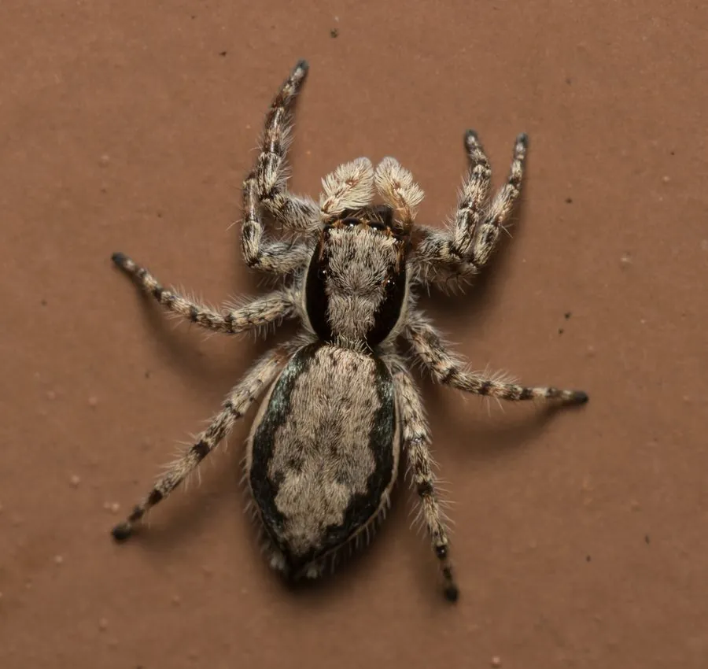

蛛形动物 · 动物界
双带扁蝇虎 Menemerus bivittatus

全球热带常见的跳蛛，身体扁平，雄蛛头胸部有两条深色纵带，常出现在墙面和树干上捕食蚊蝇，对人无害。
- 分类
- 门节肢动物门纲蛛形纲目蜘蛛目科跳蛛科属扁蝇虎属
- 栖息环境
- 墙面、树干、栏杆、窗台和灌丛等垂直表面
- 地理分布
- 全球热带和亚热带地区，中国南方常见
- 保护级别
- IUCN 暂无评估；中国未列入国家重点保护名录
物种志
双带扁蝇虎雌蛛体长 7–10 mm，雄蛛 6–8 mm，身体扁平，头胸部宽大，雄蛛背面有两条深色纵带，边缘镶浅色毛，腹部有斑纹；八眼以前中眼最大，足短粗，善于在垂直表面跳跃。
它广泛分布于全球热带和亚热带地区，在中国南方常见，栖息于墙面、树干、栏杆、窗台和灌丛，不结捕猎网，靠视觉游走捕食蚊、蝇、小蛾等昆虫。双带扁蝇虎喜欢在阳光照射的墙面活动，受惊时会迅速跳到另一处或躲进缝隙；雄蛛常举起前足向雌蛛求偶。雌蛛在隐蔽处产卵并守护卵囊，幼蛛孵化后独立生活。它的扁平身体很适合钻进树皮裂缝。它不主动咬人，无毒害，是居室和庭院中的益虫；目前 IUCN 暂无评估。
形态与习性
- 食性蚊子、苍蝇和小蛾等
- 体长雌蛛 7–10 mm，雄蛛 6–8 mm
- 识别身体扁平，雄蛛头胸部有两条深色纵带
- 习性昼行性，在墙面和树干上跳跃游猎
- 繁殖雌蛛产卵并守护卵囊
- 毒性无毒害，不主动咬人
趣味知识
- 双带扁蝇虎的身体特别扁，能钻进树皮和墙缝里躲藏。
- 它喜欢在晒得到太阳的墙面上活动，捕食停落的蚊蝇。
- 雄蛛头胸部有两条深色纵带，求偶时会举起前足摆动。